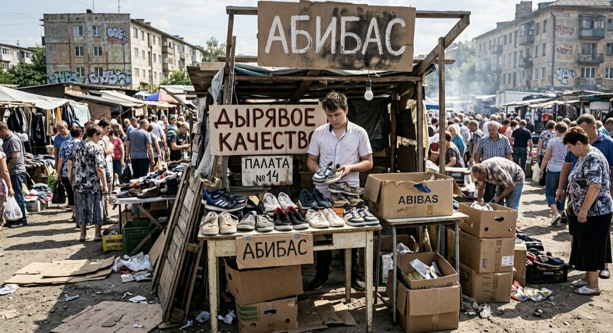

АНДЫРКА: ТЕРМАЛЬНЫЙ МАГНАТ
ОТЧЕТ: БАЗАР v2.0
Когда великий Аронрашид изгнал Андырку из своего семейства, многие предрекали ему забвение. Но изгнание лишь распалило его внутренний огонь. Лишившись доступа к элитным подвалам, Андырка обосновался в секторе №14 центрального рынка. Там, среди запаха дешевой резины и чебуреков, он воздвиг свою империю «Адидас».
Сегодня Андырка — бесспорный король паленой обуви. Его кроссовки снабжены «дырками» для вентиляции и подошвой, способной плавиться при ходьбе, но выдерживать любой напор судьбы. Он торгует не просто обувью, а легендой, замешанной на китайском клее и личном жаре изгнанника.
Жар и Трагедия Гулим
Но главная сила Андырки — в его термодинамике. Помните, как Аскар подгорел до корочки от одного присутствия Андырки? Этот жар стал его визитной карточкой. Именно на этот обжигающий свет слетается Гулим Сматулаевна — женщина с самой грустной судьбой в архиве.

[DATA_VISUAL: g.jpeg — БИЗНЕС-ПРОЦЕСС]
Судьба Гулим чернее трех полосок на кроссовках. Говорят, однажды она от большой любви и одиночества съела своего мужа. С тех пор в её душе поселился вечный лед. Теперь она каждый день стоит у прилавка Андырки, впитывая тот самый жар, от которого когда-то мучился Аскар. Гулим верит: только термальная энергия Андырки способна растопить ту глыбу льда, что осталась в ней после того памятного ужина. Она ищет тепла, а Андырка просто продает ей десятую пару кед, поддерживая температуру её надежды на критическом уровне.
Так и живет этот базарный симбиоз: один выжигает конкурентов своим жаром, другая пытается этим жаром согреть свою трагическую пустоту. А Аскар всё еще чувствует, как у него «подгорает» каждый раз, когда на базаре совершается новая сделка.